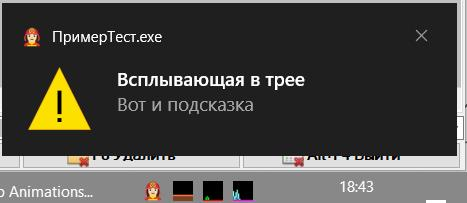
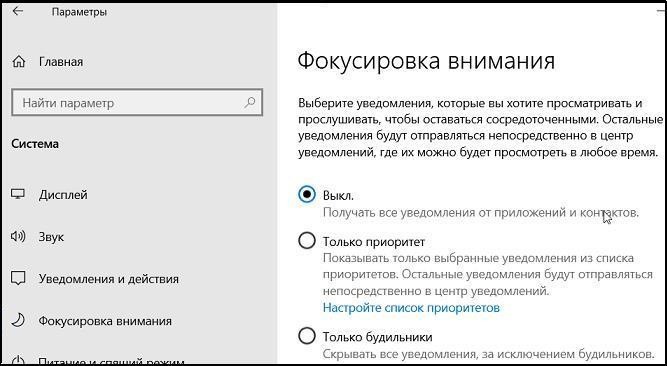

ПоказатьВсплывающуюПодсказку(<ВремяПоказа>)
ПоказатьВсплывающуюПодсказку(<ВремяПоказа>, <Заголовок>, <Текст>, <Значок>)
Отображает всплывающую подсказку с указанным заголовком, текстом и значком в панели задач в течение указанного времени.
Если Вы хотите отобразить во всплывающей подсказке имя программы, воспользуйтесь разработкой Запуск сценариев OneScript без окна консоли. Создайте исполняемый exe файл с нужным именем. Оно и будет отображено во всплывающей подсказке.
В OS Windows10 и выше отключите опцию "Фокусировка внимания" или другим способом исключите свою программу из списка блокируемых для показа в системном лотке.

ЗначокУведомления1.ПоказатьВсплывающуюПодсказку(3000);
Перем Ф, ЗначокУведомления1; Процедура Таймер1_ПриСрабатыванииТаймера() Экспорт Сообщить("Таймер " + ТекущаяУниверсальнаяДатаВМиллисекундах()); ЗначокУведомления1.ЗначокВсплывающейПодсказки = Ф.ЗначокВсплывающейПодсказки.Предупреждение; ЗначокУведомления1.ЗаголовокВсплывающейПодсказки = "Всплывающая в трее"; ЗначокУведомления1.ТекстВсплывающейПодсказки = "Вот и подсказка"; ЗначокУведомления1.ПоказатьВсплывающуюПодсказку(3000); КонецПроцедуры ПодключитьВнешнююКомпоненту("C:\444\111\OneScriptForms\OneScriptForms\bin\Debug\OneScriptForms.dll"); Ф = Новый ФормыДляОдноСкрипта(); Форма1 = Ф.Форма(); // Форма1.Отображать = Истина; // Форма1.Показать(); // Форма1.Активизировать(); КонтекстноеМеню1 = Ф.КонтекстноеМеню(); ЭлементМеню4 = КонтекстноеМеню1.ЭлементыМеню.Добавить(Ф.ЭлементМеню("1 меню")); ЭлементМеню4.Отображать = Истина; ЭлементМеню5 = КонтекстноеМеню1.ЭлементыМеню.Добавить(Ф.ЭлементМеню("2 меню")); ЭлементМеню5.Отображать = Истина; ЗначокУведомления1 = Ф.ЗначокУведомления(); ЗначокУведомления1.КонтекстноеМеню = КонтекстноеМеню1; ЗначокУведомления1.Текст = "Это подсказка в две строки" + Символы.ПС + "для значка уведомления."; СтрЗначок = "AAABAAEAICAAAAEAIACoEAAAFgAAACgAAAAgAAAAQAAAAAEAIAAAAAAAABAAAA47AAAOOwAAAAAAAAAAAAAjJswAHiLMAB0hzAElJ8wRKizNEyoszRMqL84TLSDKExd75RMA3/8TBND9EwPT/hMD0/4TA9P+EwPT/h |MC1v8TAtX/EwPT/hMD0/4TA9P+EwPT/hME0P0TAN//Exd75RMtIMoTKi/OEyoszRMqLM0TJSfMER0hzAEeIswAIybMACMmzAEdH8cAHB7GESYpztosMNTtLDDT6Ssy1OovI9DqGYbp6gTl/+oH1v7qB9n/6gfZ/+oH2f/qB9j/6gfZ/ |+oH2f/qB9n/6gfZ/+oH2f/qB9n/6gfW/uoE5f/qGYbp6i8j0OorMtTqLDDT6Sww1O0mKc7aHB7GER0fxwAjJswBIybMARYXvAASEbcIJinP4S4z2v8uM9n9LTba/zAn1/8egOv/COf//wvZ/v8L3P//C9z//wvc//8L3v//C9z//wvc |//8L3f//C9v//wvb//8L2///C9n+/wnn//8egOv/MCfX/y022v8uM9n9LjPa/yUpz98QELUGFRW7ACMmzAEjJswAJCjOAyIlygAiJcuYLDLa/zE54vcvN9/+MDXf/i894f4qVOb+KlTl/ipU5v4qVub+Klfm/i5A4v4Ysff+HJvz/i5 |A4v4pWOb+KlXm/ipT5f4qU+X+KlTm/i894f4wNd/+Lzff/TI54/crMdn/IiXLjiEkygAkJ84DIybMACMmzAAiJcsBHR7CAB8hxRYkKM7ZLjXg/zM96fsyO+X+Mjjk/zMz5P8zNOT/MzXl/zQr5P80LeT/LlPp/xnH+/8ctvj/MEjn/z |Qr5P80LeT/Mzbl/zM05P8zM+T/Mjnk/zI85v4zPOn7LTPd/yQnzckeIMUNGxu/ACIlywEjJswAIybMACMmzAAhI8gBGhm7AB4fwxkjJ824KjDZ/zE77f40P/D/NEHr/zQ/6/8zOuv/LGzw/yG2+v8a5///GuT//xrm//8a4v//I6r4/ |y5g7/80OOv/NEDr/zRB7P80P/D/MDns/yku1v8iJcuhHR3BDhENrQAgIsgBIybMACMmzAAiJswAIybMACMmzAAiJcoCJy7WAQwAMgEhIstJIiWq4igty/8sNer9MDfu/yin+P8f7v//Iun//xvj//882vv/M9z8/xzk//8h6///IOv/ |/yqS9v8wMu7/KzTm/Scswv8hI5/bICHPNCAm/wAjJ80CIyXLASMmzAAjJswAJSjOAAAAAAAjJswANDbZADQ32QAuMLcDRUj/BAAAAAAdHBnVKiw9/ykfWf0nWKL/JvD//ybi/f8h5P//IOT//3fI7/9mzfL/HeX//yLj//8m5v//Juf |//ydEkf8pI1P9Kyw3/x0dF9UAAAAAQUT/BDAxtAM2ONoANjjaACMmzQAAAAAAAAAAAElL6QBJS+kARUblAR8hAQIAAAAAOz2sdCIiLP8uMTH/LiEZ/y94e/8o9P//L9/6/1XT9/9+y/b/lMj2/5PI9v98y/b/VtP3/y/g+v8o8v//L2 |ho/y4iHP8uMTH/IiIu/zk6sXQAAAAAHh4YAkZH5QFJS+kASkvpAAAAAAAAAAAASUroAElK6AE+Pt0AMjKhCk5Q+bU+P7P/ISEe/S8yOP8tHyX/K4uX/0fo//+GxvL/pM36/6PR/P+h1v//otb//6PR/P+jzvr/h8by/0fo//8qgo7/L |iAl/y8yOP8hIR79PD2z/09Q+bUyMqIKPT3dAElK5wFJSugAAAAAAAAAAABKS+kASkvpAk5P7ABKS+WgS031/yUmgfklJB3/MDI5/ycfIP9NkKj/m9b//6fS/P+k2f//quD//6TW/v+k1v7/quD//6TZ//+n0vz/m9b//02Pp/8nHyD/ |MDI5/yUlHv8kJH/5Skvz/0pL5Z9QUe4ASkvpAkpL6QAAAAAAAAAAAElL6AJHR+YAQ0PiKE5Q6vs5OuT+HBtk/iorJP8qJir/Pk5c/5rK9v+p1///ptf//5/L8P9sgJH/S09T/0tPUv9sf5D/n8vw/6bX//+p1/7/msr2/z5OXP8qJir |/Kisk/xwcZf42N+H+TU/q+0RE4yhHSOYASUroAgAAAAAAAAAASUroBElK6ABISedUTE7p/yws1fwdHVb/Kiok/y0vN/+Br9T/r9///6fT+v+t3P//ZnWC/1BVWv9peIX/aXmG/1BWWv9mdYH/rdz//6fT+v+v3///ga/U/y0vN/8qKi |T/Hh5W/yoq0vxLTej/SkroU0pL6QBJSugDAAAAAAAAAABJSugDSkrpAElK6E5LTen/KSnN/B4eSv8nIx3/Rldq/6rb//+t1vr/rNf8/6zX/P+lzfD/sd79/7Hf//+x3///sd79/6XN8P+s1/z/rNf8/63W+v+q2///Rldq/ycjHf8eH |0v/JyfL/ElL5/9KS+lOS0zqAElK6AMAAAAAAAAAAElK6AJISOcARUbjMU1P7P8sLcz/HR4//yUiHf9XZ3n/tuL//63V+P+v2Pz/r9j8/7Hb/v+s1fn/jq3e/46t3v+s1fn/sdv+/6/Y/P+v2Pz/rdX4/7bi//9Za37/JSId/x4eQP8p |Ksn/TE7r/0dH5TBJSegASUroAgAAAAAAAAAASUvoAUZG5QA8PNcWT1Hv8DI0zv8dHTf+JCIf/2Jxgv+54///stv7/7DY+P+y2vr/s9z9/7DX+/+t1Pn/rdT5/7DX+/+z3P3/str6/7DY+P+y2vv/uuT//2l7jv8kIR7/HR44/i8wy/9 |OUO7wPj3YFkZG5QBJSugBAAAAAAAAAABKS+kBNjLUAAAAAAFPUfDUOTvS/x0dM/0lIiH/ZXaH/7/p//+kx+X/REtU/09ZZP+u0/T/tNv9/7Pa+/+z2vv/tNv9/67T9P9PWWT/REtU/6TH5f+/6f//dIic/yUiIf8dHTP9NTfO/09R8N |QAAAABNC/SAElL6AEAAAAAAAAAAEpM6QBKS+kDVFX/AE1P8KhCRNj/HR0k/CMgG/9peo3/xO7//5Kuyf8ZFBT/IyAi/6TE4f+54P//s9n5/7PZ+f+54P//o8Th/yMgIv8ZFBT/kq7J/8Tu//95jaP/IyEb/xwcI/xAQtb/Tk/wqFVX/ |wBKS+kDSkvpAAAAAAAAAAAASUvoAElK6ANHSOoAR0jkPU1P7/4/QZ3/JSMy/mZ1fP/G7v//s9by/4Sbsf+Ko7z/s9b3/7TY+v+12fv/tdn7/7TY+v+z1vf/iqO8/4Sbsf+z1vL/xu///3uQm/8lIjD+P0Gd/05P7/9HR+Q9R0jpAElK |6ANJS+gAAAAAAAAAAABKS+kAMDHNAEZH5wNBQeEANDTQtk5Q9/9MTuP8Vl3F/5q0+v9kb4n/bHmF/2l2ev9+kZj/xev//7/k+f+/5Pn/xev//36RmP9pdnr/bHmE/2RviP+ct/z/YmvV/0tN4vxOUPf/MzTQu0VG5gBLTO4CLC3IAEp |L6QAAAAAAAAAAAExO7AA2N9MAFxewBBAQqAAVFa6dKyvG/0ZH5/tNTvT/TE3w/1FT6P9CQr7/TVK6/3yO7/+Infb/ip7z/4qf8/+Infb/fI7v/01Suv9CQr3/UVTo/0xN8P9LTPH/Rkfn+ywsx/8WFq+oERCpABgYsQMuLskASk3qAA |AAAAAAAAAAAAAAAEZH5AAZGbIEFxevABkZsXUhIb3/KCjG+zI00f8/QeD/Rkjp/05Q9P9PSfb/RTvq/0U+7f9HRvX/R0b1/0Y+7f9HPOr/T0n2/05Q9P9GSOn/P0Lg/zM00v8oKMb7IiK//xkZsokYGLAAGRmzBDY30wAAAAAAAAAAA |AAAAAAAAAAAGxu1ABkZswMUFKwAFRWtPiAgu/8pKsj9KCrL/yov0v8uNNn/MjTd/zB75P9Fuvn/T53q/0luwf9HbcH/R5jp/zu0+f8ve+T/MjTe/y402f8qL9L/KCrL/ykqyPwhIb3/FhauVhUVrQAZGbIEGhq0AAAAAAAAAAAAAAAA |AAAAAAAdHbcAGhqzAQ4OpAAODqQIHBu13Cgox/8rLc79LTPV/y8u2v8pV+D/QvH//1PP2v9Bgpb/P2uB/0Brgf9AgZb/P8LZ/y7l/v8qWOD/Ly3a/y0z1f8rLc7+KSnI/x0dt/ETE6ocExOqABoaswIcHLcAAAAAAAAAAAAAAAAAAAA |AAAAAAAAaGrQAGRmyBBYVrQAXF7CAIyPA/ywu0PssM9T/LyvZ/ypq5P9M7/v/Rlp9/z85Xv89vtf/Pb7Y/0E7Xv9CV3z/NOD6/ypq5P8vK9n/LDPU/ysuz/slJcP/GRmyphcXrwAbG7QDGhq0ACMjuwAAAAAAAAAAAAAAAAAAAAAAAA |AAABoaswAaGrMBEhKoABUVrRMbG7XiKSvM/y0y1fwuMNj/K0fl/zap1P9Borj/PLvU/z6Pqv8+j6r/PbvU/z+huP8upNP/LEjm/y4w2P8sMdT+Ky3O/h0duPoWFa0xFBSrABkZsgIZGbIAAAAAAAAAAAAAAAAAAAAAAAAAAAAAAAAAG |xu1ABgYsQAYGLEDFBOqABYWrkweHrn/LC/S/S422fsuKt3/K4Pd/z99kv87yOH/QHCP/0Bwj/88yeH/PX2S/yqC3f8vK93/LjbY/S0x1fogIb3/FxevdxQTqgAYGLEDKyvMABoatAAAAAAAAAAAAAAAAAAAAAAAAAAAAAAAAAAAAAAA |GRmzABkZsQAYGLEDFBOpABcWrlwdHrn7Ki3P/y0z2vw0vff7UbXF/kQ1Wf8+jar/Ppez/0Q1Wf9AqsT+K7j3+y402/wsL9P+HyG9/xgXsIgTEqgAGhu0AhoatAAZGbIAHh63AAAAAAAAAAAAAAAAAAAAAAAAAAAAAAAAAAAAAAAbG7U |AGBiwABgYsQAYGLADExGnABUWqzIbGrTFHiO//yuj4/9F8f/9PsPb/UOes/5Bn7X+N77a/TXo//0loOP+ISbD/xwbtt4WF61SFRSqABkZsgMYGLEAGxu2ABoatAAAAAAAAAAAAAAAAAAAAAAAAAAAAAAAAAAAAAAAAAAAAAAAAAAaGr |QAJibGAP///wAYGLEDOwPVAADlqAEVAKU9GjKzmBhDuekpUeL/MKf5/i6l9/4sVef/G0O/8Bkvt6IWBKhTDS6mCQwYoAAYGLADGhqzABoaswAaGrMAAAAAAAAAAAAAAAAAAAAAAAAAAAAAAAAAAAAAAAAAAAAAAAAAAAAAAAAAAAAaG |7UAGBixABkZsQAZGrMDGhu1AhoNrwIYDasAGQyrPx8UuOggGr7pIBq+5yAVuvAZDq5eGBGuABoRsQMbG7UBGhqzAxwctgAcHLUAGhq0AAAAAAAAAAAAAAAAAAAAAAAAAAAAAAAAAAAAAAAAAAAAAAAAAAAAAAAAAAAAAAAAAAAAAAAd |HrgAGhq0ABsbtQAbNL8AGg+vAxdOxQQAAB0AASKQDAUVjRQFFYwTAR+PDwAAAAAZUMQEGRGwBBojtwEaGrMAGRqzABwctgAAAAAAAAAAAAAAAAAAAAAAAAAAAAAAAAAAAAAAQAAAAkAAAAJAAAACIAAABCAAAARQAAAKoAAAJdAAAAu |kAAAlkAAACZAAAAmgAAAFoAAABaAAAAWgAAAFoAAABaAAAAWQAAAJkAAACYgAABHIAAATyAAAE+gAABfoAAAX5AAAJ+QAACf6AABH9QAAj/qAAS/7AAJf/IgQv/9EIv8="; Значок1 = Ф.Значок(СтрЗначок); ЗначокУведомления1.Значок = Значок1; // обязательно назначить значок ЗначокУведомления1.Отображать = Истина; // обязательно отобразить значок после создания Форма1.Значок = Значок1; Таймер1 = Ф.Таймер(); Таймер1.Интервал = 16000; Таймер1.ПриСрабатыванииТаймера = Ф.Действие(ЭтотОбъект, "Таймер1_ПриСрабатыванииТаймера"); Таймер1.Начать(); Ф.ЗапуститьОбработкуСобытий();
Перем Ф, ЗначокУведомления1, Таймер1; Процедура Таймер1_ПриСрабатыванииТаймера() Экспорт // Сообщить("Таймер " + ТекущаяУниверсальнаяДатаВМиллисекундах()); ЗначокУведомления1.ЗначокВсплывающейПодсказки = Ф.ЗначокВсплывающейПодсказки.Предупреждение; ЗначокУведомления1.ЗаголовокВсплывающейПодсказки = "Всплывающая в трее"; ЗначокУведомления1.ТекстВсплывающейПодсказки = "Вот и подсказка"; ЗначокУведомления1.ПоказатьВсплывающуюПодсказку(3000); Приостановить(3000); КонецПроцедуры ПодключитьВнешнююКомпоненту("C:\444\111\OneScriptForms\OneScriptForms\bin\Debug\OneScriptForms.dll"); Ф = Новый ФормыДляОдноСкрипта(); Форма1 = Ф.Форма(); // Форма1.Отображать = Истина; // Форма1.Показать(); // Форма1.Активизировать(); КонтекстноеМеню1 = Ф.КонтекстноеМеню(); ЭлементМеню4 = КонтекстноеМеню1.ЭлементыМеню.Добавить(Ф.ЭлементМеню("1 меню")); ЭлементМеню4.Отображать = Истина; ЭлементМеню5 = КонтекстноеМеню1.ЭлементыМеню.Добавить(Ф.ЭлементМеню("2 меню")); ЭлементМеню5.Отображать = Истина; ЗначокУведомления1 = Ф.ЗначокУведомления(); ЗначокУведомления1.КонтекстноеМеню = КонтекстноеМеню1; ЗначокУведомления1.Текст = "Это подсказка в две строки" + Символы.ПС + "для значка уведомления."; СтрЗначок = "AAABAAEAICAAAAEAIACoEAAAFgAAACgAAAAgAAAAQAAAAAEAIAAAAAAAABAAAA47AAAOOwAAAAAAAAAAAAAjJswAHiLMAB0hzAElJ8wRKizNEyoszRMqL84TLSDKExd75RMA3/8TBND9EwPT/hMD0/4TA9P+EwPT/h |MC1v8TAtX/EwPT/hMD0/4TA9P+EwPT/hME0P0TAN//Exd75RMtIMoTKi/OEyoszRMqLM0TJSfMER0hzAEeIswAIybMACMmzAEdH8cAHB7GESYpztosMNTtLDDT6Ssy1OovI9DqGYbp6gTl/+oH1v7qB9n/6gfZ/+oH2f/qB9j/6gfZ/ |+oH2f/qB9n/6gfZ/+oH2f/qB9n/6gfW/uoE5f/qGYbp6i8j0OorMtTqLDDT6Sww1O0mKc7aHB7GER0fxwAjJswBIybMARYXvAASEbcIJinP4S4z2v8uM9n9LTba/zAn1/8egOv/COf//wvZ/v8L3P//C9z//wvc//8L3v//C9z//wvc |//8L3f//C9v//wvb//8L2///C9n+/wnn//8egOv/MCfX/y022v8uM9n9LjPa/yUpz98QELUGFRW7ACMmzAEjJswAJCjOAyIlygAiJcuYLDLa/zE54vcvN9/+MDXf/i894f4qVOb+KlTl/ipU5v4qVub+Klfm/i5A4v4Ysff+HJvz/i5 |A4v4pWOb+KlXm/ipT5f4qU+X+KlTm/i894f4wNd/+Lzff/TI54/crMdn/IiXLjiEkygAkJ84DIybMACMmzAAiJcsBHR7CAB8hxRYkKM7ZLjXg/zM96fsyO+X+Mjjk/zMz5P8zNOT/MzXl/zQr5P80LeT/LlPp/xnH+/8ctvj/MEjn/z |Qr5P80LeT/Mzbl/zM05P8zM+T/Mjnk/zI85v4zPOn7LTPd/yQnzckeIMUNGxu/ACIlywEjJswAIybMACMmzAAhI8gBGhm7AB4fwxkjJ824KjDZ/zE77f40P/D/NEHr/zQ/6/8zOuv/LGzw/yG2+v8a5///GuT//xrm//8a4v//I6r4/ |y5g7/80OOv/NEDr/zRB7P80P/D/MDns/yku1v8iJcuhHR3BDhENrQAgIsgBIybMACMmzAAiJswAIybMACMmzAAiJcoCJy7WAQwAMgEhIstJIiWq4igty/8sNer9MDfu/yin+P8f7v//Iun//xvj//882vv/M9z8/xzk//8h6///IOv/ |/yqS9v8wMu7/KzTm/Scswv8hI5/bICHPNCAm/wAjJ80CIyXLASMmzAAjJswAJSjOAAAAAAAjJswANDbZADQ32QAuMLcDRUj/BAAAAAAdHBnVKiw9/ykfWf0nWKL/JvD//ybi/f8h5P//IOT//3fI7/9mzfL/HeX//yLj//8m5v//Juf |//ydEkf8pI1P9Kyw3/x0dF9UAAAAAQUT/BDAxtAM2ONoANjjaACMmzQAAAAAAAAAAAElL6QBJS+kARUblAR8hAQIAAAAAOz2sdCIiLP8uMTH/LiEZ/y94e/8o9P//L9/6/1XT9/9+y/b/lMj2/5PI9v98y/b/VtP3/y/g+v8o8v//L2 |ho/y4iHP8uMTH/IiIu/zk6sXQAAAAAHh4YAkZH5QFJS+kASkvpAAAAAAAAAAAASUroAElK6AE+Pt0AMjKhCk5Q+bU+P7P/ISEe/S8yOP8tHyX/K4uX/0fo//+GxvL/pM36/6PR/P+h1v//otb//6PR/P+jzvr/h8by/0fo//8qgo7/L |iAl/y8yOP8hIR79PD2z/09Q+bUyMqIKPT3dAElK5wFJSugAAAAAAAAAAABKS+kASkvpAk5P7ABKS+WgS031/yUmgfklJB3/MDI5/ycfIP9NkKj/m9b//6fS/P+k2f//quD//6TW/v+k1v7/quD//6TZ//+n0vz/m9b//02Pp/8nHyD/ |MDI5/yUlHv8kJH/5Skvz/0pL5Z9QUe4ASkvpAkpL6QAAAAAAAAAAAElL6AJHR+YAQ0PiKE5Q6vs5OuT+HBtk/iorJP8qJir/Pk5c/5rK9v+p1///ptf//5/L8P9sgJH/S09T/0tPUv9sf5D/n8vw/6bX//+p1/7/msr2/z5OXP8qJir |/Kisk/xwcZf42N+H+TU/q+0RE4yhHSOYASUroAgAAAAAAAAAASUroBElK6ABISedUTE7p/yws1fwdHVb/Kiok/y0vN/+Br9T/r9///6fT+v+t3P//ZnWC/1BVWv9peIX/aXmG/1BWWv9mdYH/rdz//6fT+v+v3///ga/U/y0vN/8qKi |T/Hh5W/yoq0vxLTej/SkroU0pL6QBJSugDAAAAAAAAAABJSugDSkrpAElK6E5LTen/KSnN/B4eSv8nIx3/Rldq/6rb//+t1vr/rNf8/6zX/P+lzfD/sd79/7Hf//+x3///sd79/6XN8P+s1/z/rNf8/63W+v+q2///Rldq/ycjHf8eH |0v/JyfL/ElL5/9KS+lOS0zqAElK6AMAAAAAAAAAAElK6AJISOcARUbjMU1P7P8sLcz/HR4//yUiHf9XZ3n/tuL//63V+P+v2Pz/r9j8/7Hb/v+s1fn/jq3e/46t3v+s1fn/sdv+/6/Y/P+v2Pz/rdX4/7bi//9Za37/JSId/x4eQP8p |Ksn/TE7r/0dH5TBJSegASUroAgAAAAAAAAAASUvoAUZG5QA8PNcWT1Hv8DI0zv8dHTf+JCIf/2Jxgv+54///stv7/7DY+P+y2vr/s9z9/7DX+/+t1Pn/rdT5/7DX+/+z3P3/str6/7DY+P+y2vv/uuT//2l7jv8kIR7/HR44/i8wy/9 |OUO7wPj3YFkZG5QBJSugBAAAAAAAAAABKS+kBNjLUAAAAAAFPUfDUOTvS/x0dM/0lIiH/ZXaH/7/p//+kx+X/REtU/09ZZP+u0/T/tNv9/7Pa+/+z2vv/tNv9/67T9P9PWWT/REtU/6TH5f+/6f//dIic/yUiIf8dHTP9NTfO/09R8N |QAAAABNC/SAElL6AEAAAAAAAAAAEpM6QBKS+kDVFX/AE1P8KhCRNj/HR0k/CMgG/9peo3/xO7//5Kuyf8ZFBT/IyAi/6TE4f+54P//s9n5/7PZ+f+54P//o8Th/yMgIv8ZFBT/kq7J/8Tu//95jaP/IyEb/xwcI/xAQtb/Tk/wqFVX/ |wBKS+kDSkvpAAAAAAAAAAAASUvoAElK6ANHSOoAR0jkPU1P7/4/QZ3/JSMy/mZ1fP/G7v//s9by/4Sbsf+Ko7z/s9b3/7TY+v+12fv/tdn7/7TY+v+z1vf/iqO8/4Sbsf+z1vL/xu///3uQm/8lIjD+P0Gd/05P7/9HR+Q9R0jpAElK |6ANJS+gAAAAAAAAAAABKS+kAMDHNAEZH5wNBQeEANDTQtk5Q9/9MTuP8Vl3F/5q0+v9kb4n/bHmF/2l2ev9+kZj/xev//7/k+f+/5Pn/xev//36RmP9pdnr/bHmE/2RviP+ct/z/YmvV/0tN4vxOUPf/MzTQu0VG5gBLTO4CLC3IAEp |L6QAAAAAAAAAAAExO7AA2N9MAFxewBBAQqAAVFa6dKyvG/0ZH5/tNTvT/TE3w/1FT6P9CQr7/TVK6/3yO7/+Infb/ip7z/4qf8/+Infb/fI7v/01Suv9CQr3/UVTo/0xN8P9LTPH/Rkfn+ywsx/8WFq+oERCpABgYsQMuLskASk3qAA |AAAAAAAAAAAAAAAEZH5AAZGbIEFxevABkZsXUhIb3/KCjG+zI00f8/QeD/Rkjp/05Q9P9PSfb/RTvq/0U+7f9HRvX/R0b1/0Y+7f9HPOr/T0n2/05Q9P9GSOn/P0Lg/zM00v8oKMb7IiK//xkZsokYGLAAGRmzBDY30wAAAAAAAAAAA |AAAAAAAAAAAGxu1ABkZswMUFKwAFRWtPiAgu/8pKsj9KCrL/yov0v8uNNn/MjTd/zB75P9Fuvn/T53q/0luwf9HbcH/R5jp/zu0+f8ve+T/MjTe/y402f8qL9L/KCrL/ykqyPwhIb3/FhauVhUVrQAZGbIEGhq0AAAAAAAAAAAAAAAA |AAAAAAAdHbcAGhqzAQ4OpAAODqQIHBu13Cgox/8rLc79LTPV/y8u2v8pV+D/QvH//1PP2v9Bgpb/P2uB/0Brgf9AgZb/P8LZ/y7l/v8qWOD/Ly3a/y0z1f8rLc7+KSnI/x0dt/ETE6ocExOqABoaswIcHLcAAAAAAAAAAAAAAAAAAAA |AAAAAAAAaGrQAGRmyBBYVrQAXF7CAIyPA/ywu0PssM9T/LyvZ/ypq5P9M7/v/Rlp9/z85Xv89vtf/Pb7Y/0E7Xv9CV3z/NOD6/ypq5P8vK9n/LDPU/ysuz/slJcP/GRmyphcXrwAbG7QDGhq0ACMjuwAAAAAAAAAAAAAAAAAAAAAAAA |AAABoaswAaGrMBEhKoABUVrRMbG7XiKSvM/y0y1fwuMNj/K0fl/zap1P9Borj/PLvU/z6Pqv8+j6r/PbvU/z+huP8upNP/LEjm/y4w2P8sMdT+Ky3O/h0duPoWFa0xFBSrABkZsgIZGbIAAAAAAAAAAAAAAAAAAAAAAAAAAAAAAAAAG |xu1ABgYsQAYGLEDFBOqABYWrkweHrn/LC/S/S422fsuKt3/K4Pd/z99kv87yOH/QHCP/0Bwj/88yeH/PX2S/yqC3f8vK93/LjbY/S0x1fogIb3/FxevdxQTqgAYGLEDKyvMABoatAAAAAAAAAAAAAAAAAAAAAAAAAAAAAAAAAAAAAAA |GRmzABkZsQAYGLEDFBOpABcWrlwdHrn7Ki3P/y0z2vw0vff7UbXF/kQ1Wf8+jar/Ppez/0Q1Wf9AqsT+K7j3+y402/wsL9P+HyG9/xgXsIgTEqgAGhu0AhoatAAZGbIAHh63AAAAAAAAAAAAAAAAAAAAAAAAAAAAAAAAAAAAAAAbG7U |AGBiwABgYsQAYGLADExGnABUWqzIbGrTFHiO//yuj4/9F8f/9PsPb/UOes/5Bn7X+N77a/TXo//0loOP+ISbD/xwbtt4WF61SFRSqABkZsgMYGLEAGxu2ABoatAAAAAAAAAAAAAAAAAAAAAAAAAAAAAAAAAAAAAAAAAAAAAAAAAAaGr |QAJibGAP///wAYGLEDOwPVAADlqAEVAKU9GjKzmBhDuekpUeL/MKf5/i6l9/4sVef/G0O/8Bkvt6IWBKhTDS6mCQwYoAAYGLADGhqzABoaswAaGrMAAAAAAAAAAAAAAAAAAAAAAAAAAAAAAAAAAAAAAAAAAAAAAAAAAAAAAAAAAAAaG |7UAGBixABkZsQAZGrMDGhu1AhoNrwIYDasAGQyrPx8UuOggGr7pIBq+5yAVuvAZDq5eGBGuABoRsQMbG7UBGhqzAxwctgAcHLUAGhq0AAAAAAAAAAAAAAAAAAAAAAAAAAAAAAAAAAAAAAAAAAAAAAAAAAAAAAAAAAAAAAAAAAAAAAAd |HrgAGhq0ABsbtQAbNL8AGg+vAxdOxQQAAB0AASKQDAUVjRQFFYwTAR+PDwAAAAAZUMQEGRGwBBojtwEaGrMAGRqzABwctgAAAAAAAAAAAAAAAAAAAAAAAAAAAAAAAAAAAAAAQAAAAkAAAAJAAAACIAAABCAAAARQAAAKoAAAJdAAAAu |kAAAlkAAACZAAAAmgAAAFoAAABaAAAAWgAAAFoAAABaAAAAWQAAAJkAAACYgAABHIAAATyAAAE+gAABfoAAAX5AAAJ+QAACf6AABH9QAAj/qAAS/7AAJf/IgQv/9EIv8="; Значок1 = Ф.Значок(СтрЗначок); ЗначокУведомления1.Значок = Значок1; // обязательно назначить значок ЗначокУведомления1.Отображать = Истина; // обязательно отобразить значок после создания Форма1.Значок = Значок1; Таймер1 = Ф.Таймер(); Таймер1.Интервал = 16000; Таймер1.ПриСрабатыванииТаймера = Ф.Действие(ЭтотОбъект, "Таймер1_ПриСрабатыванииТаймера"); Таймер1.Начать(); Таймер1_ПриСрабатыванииТаймера(); Сообщить(?(ЗначокУведомления1.ТекстВсплывающейПодсказки = "Вот и подсказка", "", "!!! ") + "ЗначокУведомления.ПоказатьВсплывающуюПодсказку (NotifyIcon.ShowBalloonTip) Метод" + " " + ТекущаяДата());
ЗначокУведомления (NotifyIcon) Класс | Библиотека OneScriptForms